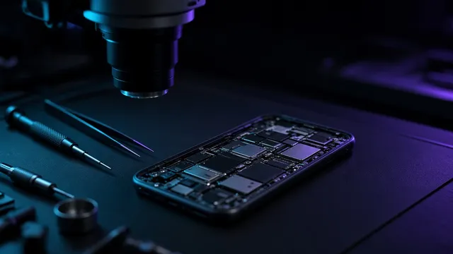

$ error: page_not_found
404
Tej strony nie da się naprawić. Wróć do serwisu.
cd ~/nanofixProjekt demonstracyjny Klikoo
$ error: page_not_found
Tej strony nie da się naprawić. Wróć do serwisu.
cd ~/nanofixProjekt demonstracyjny Klikoo